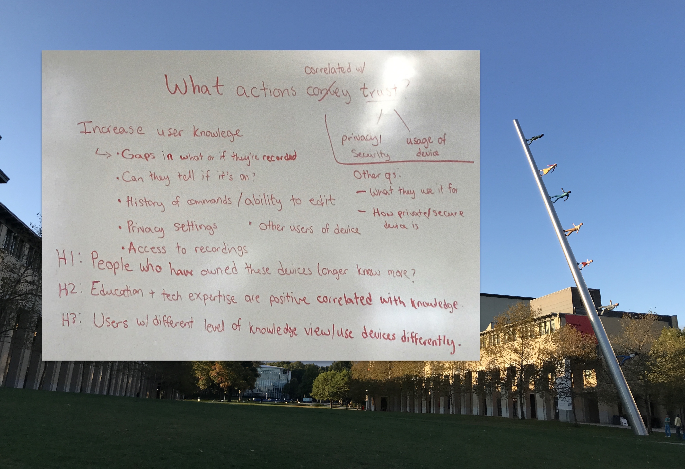

OurCS Workshop: Perceptions of Privacy
DATE
Oct 18-20, 2019
WHERE
Carnegie Mellon University
Pittsburgh, PA
TECHNOLOGIES
R, RStudio, Mechanical Turk
The rise of privacy and security concerns of digital voice assistants has closely followed their growth in popularity. At the OurCS conference, our group aimed to study the privacy and security perceptions of Amazon Alexa device owners.
Overview
The rise of privacy and security concerns has closely followed the increase in our society’s dependence on technology. This is especially prevalent in the world of digital voice assistants, which are now commonplace features on smartphones, in houses, and even in cars. At the OurCS conference, our group aimed to study the correlations between privacy and security knowledge and the privacy and security concerns of Amazon Alexa device owners.
Motivation
Issues in privacy and security are generating more traction than ever in a world now littered with voice assistants. Nearly everyone owns or has interacted with a digital assistant, whether it be Apple’s Siri, Amazon’s Alexa, or Microsoft’s Cortana. However, people’s perceptions of their privacy surrounding these devices varies drastically. As such, our research workshop group at OurCS 2019 designed and ran a small study to determine how one’s security and privacy perceptions are changed in the presence of a voice assistant.
Ideation
There are a plethora of ways to explore the topic of perceived privacy surrounding voice assistants. Our team began by listing potential research areas, then expanding on each with a narrower set of investigatory questions. We thought about the importance of one’s trust in the company of their voice assistant, differences in privacy perceptions between mobile and stand-alone devices, and topics such as device use based on privacy concerns (figure 1).
- People who have owned [Amazon Alexa] devices longer know more about their device privacy.
- People with higher education or technology expertise will have more knowledge on their device privacy.
- Device usage varies by a user’s level of knowledge on privacy.
- More privacy concerns leads to less device usage.